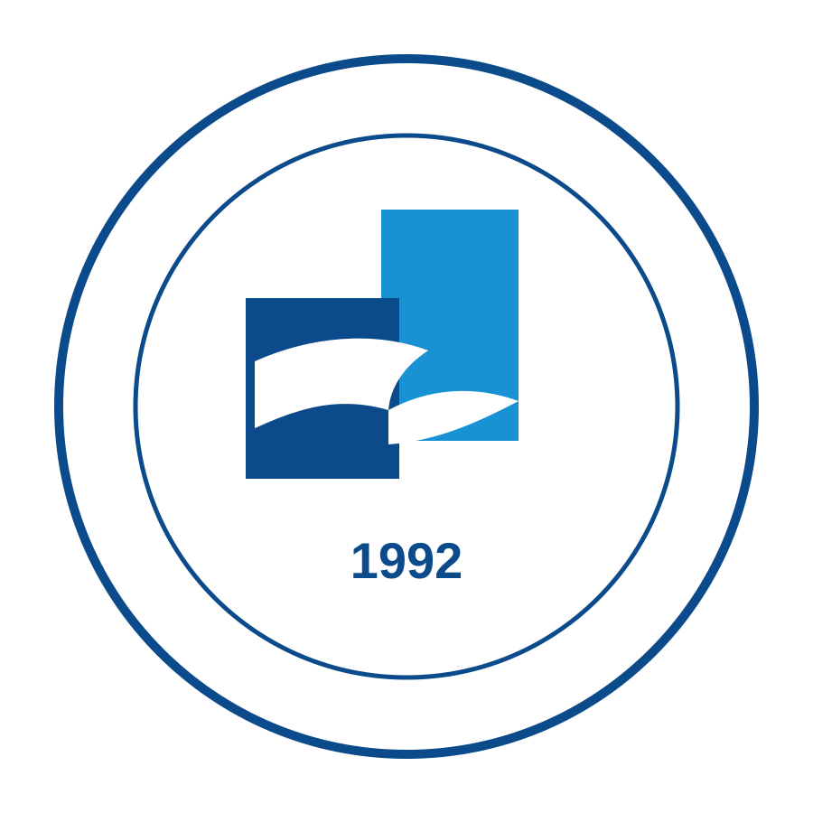

Sistemin ikinci dönem ara raporudur.
| Hazırlayan Öğrenciler |
Eray Ülgen - 22253006 Halim Mert Kazdal - 22253070 |
| Danışman | Prof. Dr. Tufan Turacı |
| Üniversite | Pamukkale Üniversitesi |
| Bölüm | Bilgisayar Mühendisliği Bölümü |
| Dönem | 2025-2026 Eğitim Öğretim Yılı Bahar Dönemi |
Özet
Bu raporda, ikinci dönemde gelinen noktada geliştirilen Tez projesinin mevcut durumu özetlenmektedir. Çalışmanın amacı, kullanıcının ruh halini selfie ve metin verisini birlikte işleyerek yorumlayan ve bu ruh haline uygun kişiselleştirilmiş öneriler sunan bir yapay zeka destekli yaşam koçu sistemi geliştirmektir.
Bu dönem boyunca proje, iki güçlü yapının bir araya getirilmesiyle olgunlaştırılmıştır. Halim Mert Kazdal tarafından geliştirilen backend yapısı veri, auth ve servis omurgası açısından temel alınmış; Eray Ülgen tarafından geliştirilen frontend yapısı ise arayüz, sayfa akışları ve kullanıcı deneyimi açısından projeye taşınmıştır. Böylece sistem; teknik açıdan daha sağlam, görsel açıdan daha sunulabilir ve tez süreci açısından daha etkileyici bir seviyeye çıkarılmıştır.
Bu sürecin sonunda kullanıcı kaydı, misafir kullanım modeli, analiz geçmişi, profil yönetimi, sonuç ekranı, öneri sistemi, geri bildirim toplama, araştırma metrikleri ve Docker ile çalıştırılabilirlik gibi kritik bileşenler çalışan tek bir ürün içinde birleştirilmiştir.
İçindekiler
- Giriş
- Katkı Dağılımı ve Geliştirme Yaklaşımı
- Sistem Mimarisi
- Arayüz ve Kullanıcı Deneyimi Geliştirmeleri
- Backend ve İş Kuralları Geliştirmeleri
- Geri Bildirim ve Araştırma Metrikleri
- Dağıtım, Doğrulama ve Mevcut Durum
- Sonuç
1. Giriş
Bu tez çalışmasının temel hedefi, kullanıcının duygu durumunu yalnızca tespit eden değil; aynı zamanda bu tespit üzerinden yönlendirici ve kişisel çıktılar üreten bir sistem geliştirmektir. Bu nedenle proje yalnızca bir sınıflandırma problemi olarak ele alınmamış, kullanıcıya pratik fayda üretmesi hedeflenen bir ürün olarak kurgulanmıştır.
İkinci dönemde odak noktası, ilk aşamada ayrı ayrı gelişmiş durumda bulunan backend ve frontend yapılarını tek bir nihai ürün haline getirmek olmuştur. Böylece proje, bir prototipten çıkarak sunum yapılabilir, ekranları tamamlanmış ve kullanıcı davranışı ölçülebilir bir sisteme dönüşmüştür.

2. Katkı Dağılımı ve Geliştirme Yaklaşımı
Bu dönemde projeyi olgunlaştıran temel unsur, iki farklı çalışmanın güçlü yönlerinin tek yapıda birleşmesidir. Burada katkı dağılımı açık biçimde şu şekilde şekillenmiştir:
| Kişi | Çalışma Alanı | Projeye Taşınan Güçlü Yön |
|---|---|---|
| Halim Mert Kazdal | Backend yapısı | Auth, servis omurgası, veri yönetimi, analiz geçmişi ve öneri katmanı için daha sağlam backend temeli |
| Eray Ülgen | Frontend yapısı | Arayüz gücü, sayfa akışları, kullanıcı deneyimi, ekranların ürün hissi ve görsel tutarlılık |
| Ortak nihai çalışma | Entegrasyon ve uyarlama süreci | İki yapı arasındaki kontrat farklarının kapatılması ve tek bir çalışan tez ürününe dönüştürülmesi |
Başka bir ifadeyle, Mert tarafından geliştirilen backend projenin teknik omurgasını oluştururken; Eray tarafından geliştirilen frontend projenin kullanıcıya görünen yüzünü ve deneyim gücünü belirlemiştir. İkinci dönem boyunca yürütülen esas iş, bu iki yapıyı birbirine tam uyumlu hale getirerek tek bir tez ürünü üretmek olmuştur.
3. Sistem Mimarisi
Sistem dört ana katmandan oluşmaktadır: frontend arayüzü, API Gateway, AI Service ve PostgreSQL veri tabanı. Frontend katmanı kullanıcı ile etkileşimi yönetirken, API Gateway auth, history, feedback ve metrics gibi süreçleri kontrol etmektedir. AI Service duygu analizi ve öneri üretimini üstlenmekte; veri tabanı ise tüm bu çıktıları kalıcı hale getirmektedir.


Frontend tarafı
Eray tarafından geliştirilen frontend hattı; ana sayfa, analiz, sonuç, giriş, kayıt, geçmiş, profil ve metrics ekranlarını kapsayan kullanıcı deneyimi omurgasını sağlamıştır.
Backend tarafı
Mert tarafından geliştirilen backend hattı; auth, session yönetimi, history, recommendation, feedback ve araştırma metriklerinin güvenilir biçimde çalışmasını sağlamıştır.
4. Arayüz ve Kullanıcı Deneyimi Geliştirmeleri
İkinci dönemde frontend tarafında temel amaç, sistemi daha akıcı, anlaşılır ve sunulabilir hale getirmek olmuştur. Özellikle giriş ve kayıt ekranları, analiz ekranı ve sonuç ekranı tek bir ürün çizgisinde birleştirilmiştir.


5. Backend ve İş Kuralları Geliştirmeleri
Backend tarafında sadece servislerin çalışması yeterli görülmemiş, aynı zamanda ürün davranışını şekillendiren kurallar da tanımlanmıştır. Bu dönemde özellikle misafir kullanıcı modeli, guest session takibi ve guest verisinin hesaba taşınması önemli geliştirme başlıkları olmuştur.

| Başlık | Gerçekleştirilen geliştirme | Katkı |
|---|---|---|
| JWT tabanlı auth | Login ve register uçları nihai ürün akışına göre düzenlenmiştir. | Korumalı alanlar ve kullanıcı yönetimi sağlanmıştır. |
| Guest limit kuralı | İlk üç analiz misafir kullanıma açık bırakılmıştır. | Ürünü deneme eşiği korunmuş, hesap geçişi desteklenmiştir. |
| Guest merge | Misafir olarak oluşan analizlerin kullanıcı hesabına taşınması sağlanmıştır. | Veri sürekliliği korunmuştur. |
| History ve recommendations | Sonuç ekranı ve geçmiş ekranı ile uyumlu veri modeli kurulmuştur. | Frontend-backend entegrasyonu tamamlanmıştır. |
| Admin ve export hazırlığı | İleri faz yönetim ihtiyaçları için temel servis uçları hazırlanmıştır. | Final teslim öncesi genişlemeye açık bir zemin kurulmuştur. |
Bu katman, Mert tarafından geliştirilen backend omurgasının projeye sağladığı temel avantajı göstermektedir: veri yönetimi ve servis tarafında daha sağlam, daha sürdürülebilir ve genişlemeye açık bir yapı elde edilmiştir.
6. Geri Bildirim ve Araştırma Metrikleri
İkinci dönemin ayırt edici çıktılarından biri, sistemin kullanıcıdan geri bildirim toplayabilen ve bu geri bildirimi araştırma metriğine dönüştürebilen bir yapıya kavuşmasıdır. Böylece proje, yalnızca çalışan bir uygulama değil; aynı zamanda ölçülebilir bir araştırma prototipi haline gelmiştir.


Toplanan veriler
Genel puan, analiz doğruluğu, öneri kalitesi, faydalılık ve tekrar kullanım niyeti.
Segment mantığı
Guest / registered, yüz tespiti var / yok ve hızlı / derin analiz grupları ayrı incelenmektedir.
Akademik değer
Bu yapı, sistemi değerlendirilebilir ve raporlanabilir bir araştırma çıktısına dönüştürmektedir.
7. Dağıtım, Doğrulama ve Mevcut Durum
Proje bu rapor hazırlanırken Docker üzerinden yeniden ayağa kaldırılmış, localhost ortamında test edilmiş ve rapor görselleri canlı sistemden alınmıştır. Bu nedenle raporda yer alan ekran görüntüleri sadece tasarım örneği değil, çalışan sistemin gerçek çıktılarıdır.
- Frontend, API Gateway, AI Service ve PostgreSQL birlikte çalıştırılmıştır.
- Docker image’ları yeniden build edilmiştir.
- Demo kullanıcı ile login, analyze, result, history, profile ve metrics akışları doğrulanmıştır.
- Feedback verisi sisteme işlenmiş ve metrics ekranında görünür hale getirilmiştir.
- Rapor içindeki görseller canlı sistemden otomatik olarak üretilmiştir.
8. Sonuç
İkinci dönem sonunda proje önemli bir bütünlük kazanmıştır. Mert tarafından geliştirilen backend omurgası ile Eray tarafından geliştirilen frontend deneyimi tek bir üründe birleştirilmiş; sonuçta hem teknik hem de görsel açıdan daha güçlü bir tez sistemi ortaya çıkmıştır.
Bu yapı sayesinde kullanıcı yalnızca analiz sonucu gören değil; kayıt olabilen, geçmişine erişebilen, geri bildirim verebilen ve sistemin öneri kapasitesinden yararlanabilen bir deneyim yaşamaktadır. Aynı anda proje, araştırma metriği üretebildiği için akademik değerlendirme açısından da daha güçlü hale gelmiştir.
Bundan sonraki aşamada admin panelinin genişletilmesi, araştırma karşılaştırmalarının artırılması ve güvenlik katmanının daha da güçlendirilmesi hedeflenmektedir. Ancak bu raporun kapsadığı aşamada, proje artık yalnızca fikir düzeyinde değil; çalışan, gösterilebilir ve savunulabilir bir sistem düzeyindedir.
Eray Ülgen - 22253006
Halim Mert Kazdal - 22253070